Uncertainty cascade - DESTinEE & Calliope
Table of Contents
1. Plot description
The plots are grouped in two ways, by country and by technology. To keep the plots manageable, the countries have been grouped as shown in the table below. Transmission is not included for the moment.
| nordic | baltic | west | med | isles | balkan |
|---|---|---|---|---|---|
| DNK | EST | DEU | ESP | GBR | MKD |
| FIN | LTU | FRA | ITA | IRL | ROU |
| NOR | LVA | NLD | GRC | SRB | |
| SWE | LUX | PRT | SVN | ||
| BEL | HRV | ||||
| POL | ALB | ||||
| CHE | BIH | ||||
| AUT | BGR | ||||
| SVK | |||||
| HUN | |||||
| CZE |
To compare the variation between different scenarios, they are treated in groups: building heating, EV charging, PV cost, and battery cost. For each we decide on a baseline as shown in the table below. When one scenario is being varied, the others are pinned to the corresponding baseline. Then the (asymmetric) uncertainty is calculated as deviation from the baseline for that scenario.
The scenarios are further grouped into three categories: demand side uncertainty, and cost uncertainty, and all. To estimate the uncertainty of one scenario group, the scenarios in the other group are pinned to their baselines; for all nothing is pinned.
Scenario baselines:
| heating | EV | PV | battery | demand | cost | all |
|---|---|---|---|---|---|---|
| mid | mid | 100 | 100 | PV | heating | none |
| battery | EV |
2. Notes
The plot files are named as: {metric}_{region}_{grouping}.html,
where grouping is either "region" or "technology". The bars in the
plots are is the baseline for all, i.e. all fixed, and the uncertainty
is shown by the error bars. I don't think this is ideal, as you
cannot see the different splits (by country or technology). But I
chose this to make it easier to compare.
3. Plots
3.1. Systemwide metrics
3.2. Capacity factor breakdowns
3.3. Uncertainty comparisons across scenario groups
3.3.1. Variation of demand and production across scenario groups
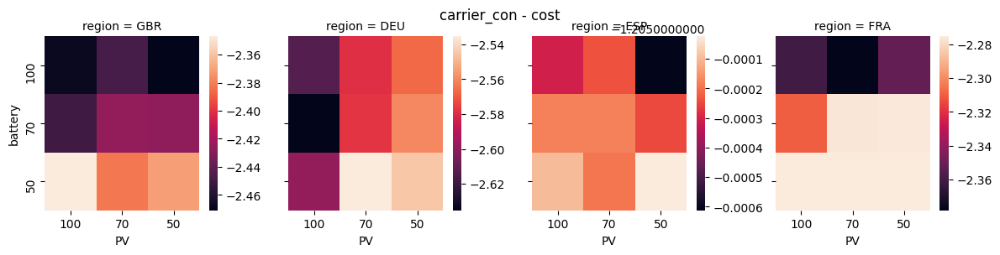
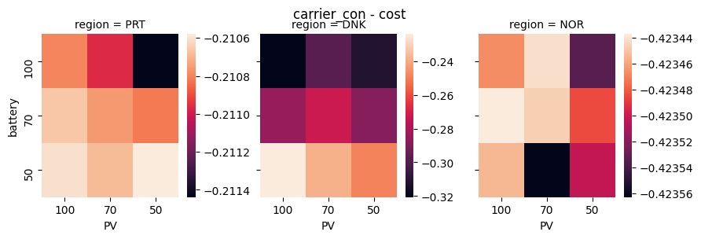
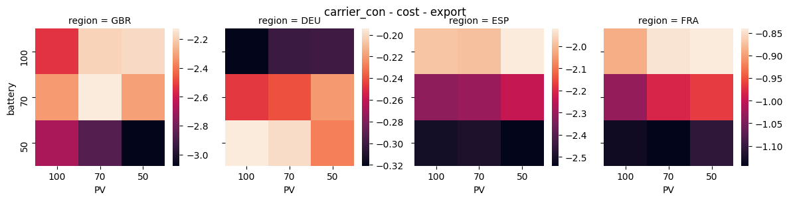
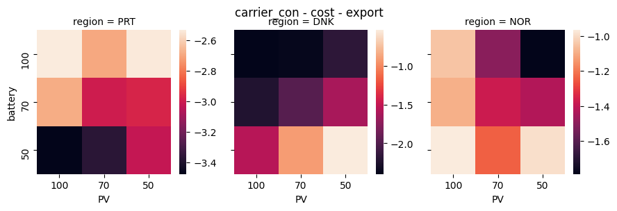
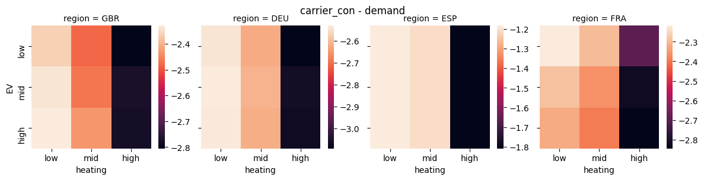
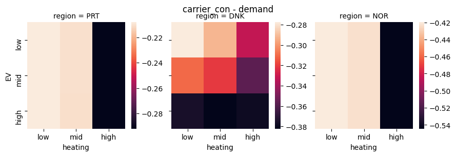
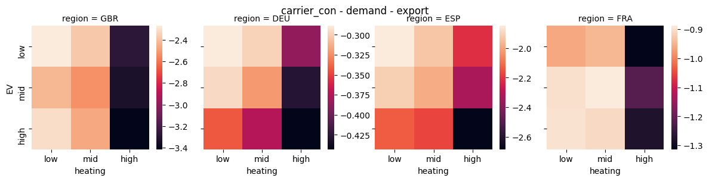
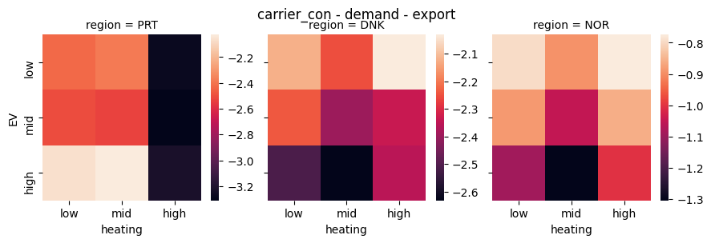
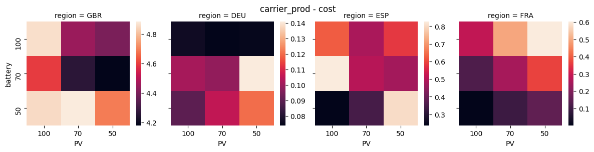
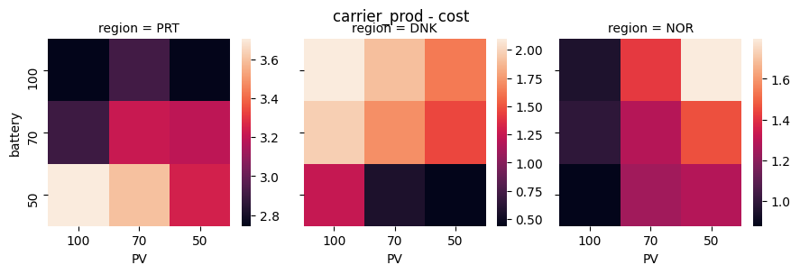
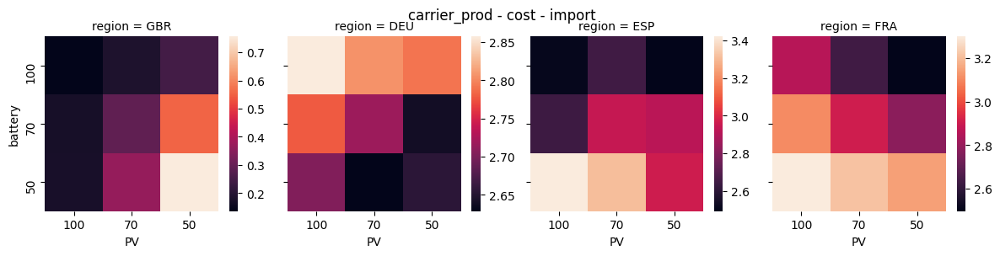
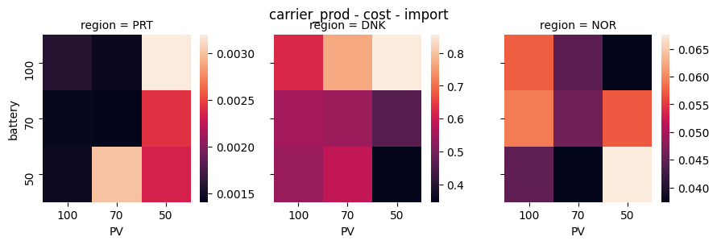
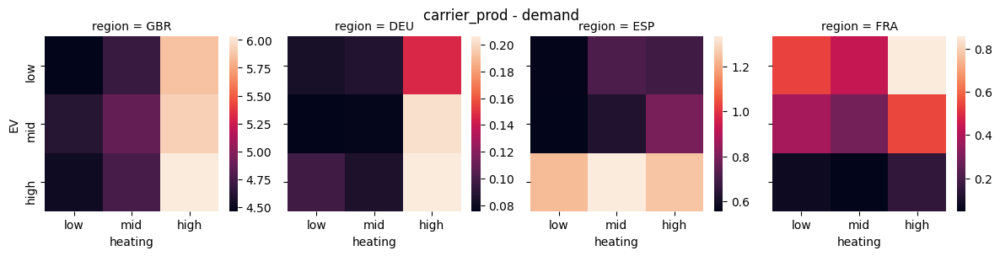
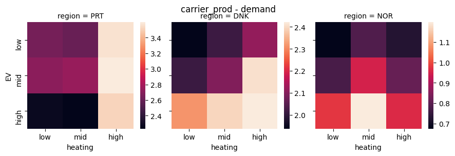
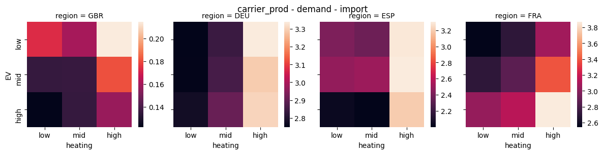
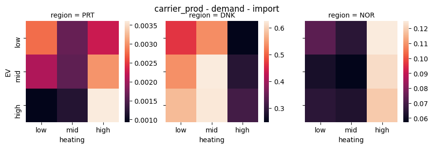
3.4. Comparison: demand - production - import - export
3.5. Others
- carrier_con_balkan_region.html
- carrier_con_balkan_technology.html
- carrier_con_baltic_region.html
- carrier_con_baltic_technology.html
- carrier_con_isles_region.html
- carrier_con_isles_technology.html
- carrier_con_med_region.html
- carrier_con_med_technology.html
- carrier_con_nordic_region.html
- carrier_con_nordic_technology.html
- carrier_con_west_region.html
- carrier_con_west_technology.html
- carrier_prod_balkan_region.html
- carrier_prod_balkan_technology.html
- carrier_prod_baltic_region.html
- carrier_prod_baltic_technology.html
- carrier_prod_isles_region.html
- carrier_prod_isles_technology.html
- carrier_prod_med_region.html
- carrier_prod_med_technology.html
- carrier_prod_nordic_region.html
- carrier_prod_nordic_technology.html
- carrier_prod_share.html
- carrier_prod_west_region.html
- carrier_prod_west_technology.html
- cost_balkan_region.html
- cost_balkan_technology.html
- cost_baltic_region.html
- cost_baltic_technology.html
- cost_investment_balkan_region.html
- cost_investment_balkan_technology.html
- cost_investment_baltic_region.html
- cost_investment_baltic_technology.html
- cost_investment_isles_region.html
- cost_investment_isles_technology.html
- cost_investment_med_region.html
- cost_investment_med_technology.html
- cost_investment_nordic_region.html
- cost_investment_nordic_technology.html
- cost_investment_west_region.html
- cost_investment_west_technology.html
- cost_isles_region.html
- cost_isles_technology.html
- cost_med_region.html
- cost_med_technology.html
- cost_nordic_region.html
- cost_nordic_technology.html
- cost_var_balkan_region.html
- cost_var_balkan_technology.html
- cost_var_baltic_region.html
- cost_var_baltic_technology.html
- cost_var_isles_region.html
- cost_var_isles_technology.html
- cost_var_med_region.html
- cost_var_med_technology.html
- cost_var_nordic_region.html
- cost_var_nordic_technology.html
- cost_var_west_region.html
- cost_var_west_technology.html
- cost_west_region.html
- cost_west_technology.html
- energy_cap_balkan_region.html
- energy_cap_balkan_technology.html
- energy_cap_baltic_region.html
- energy_cap_baltic_technology.html
- energy_cap_isles_region.html
- energy_cap_isles_technology.html
- energy_cap_med_region.html
- energy_cap_med_technology.html
- energy_cap_nordic_region.html
- energy_cap_nordic_technology.html
- energy_cap_west_region.html
- energy_cap_west_technology.html
- resource_area_balkan_region.html
- resource_area_balkan_technology.html
- resource_area_baltic_region.html
- resource_area_baltic_technology.html
- resource_area_isles_region.html
- resource_area_isles_technology.html
- resource_area_med_region.html
- resource_area_med_technology.html
- resource_area_nordic_region.html
- resource_area_nordic_technology.html
- resource_area_west_region.html
- resource_area_west_technology.html
- resource_cap_balkan_region.html
- resource_cap_balkan_technology.html
- resource_cap_baltic_region.html
- resource_cap_baltic_technology.html
- resource_cap_isles_region.html
- resource_cap_isles_technology.html
- resource_cap_med_region.html
- resource_cap_med_technology.html
- resource_cap_nordic_region.html
- resource_cap_nordic_technology.html
- resource_cap_west_region.html
- resource_cap_west_technology.html
- resource_con_balkan_region.html
- resource_con_balkan_technology.html
- resource_con_baltic_region.html
- resource_con_baltic_technology.html
- resource_con_isles_region.html
- resource_con_isles_technology.html
- resource_con_med_region.html
- resource_con_med_technology.html
- resource_con_nordic_region.html
- resource_con_nordic_technology.html
- resource_con_west_region.html
- resource_con_west_technology.html
- storage_balkan_region.html
- storage_balkan_technology.html
- storage_baltic_region.html
- storage_baltic_technology.html
- storage_cap_balkan_region.html
- storage_cap_balkan_technology.html
- storage_cap_baltic_region.html
- storage_cap_baltic_technology.html
- storage_cap_isles_region.html
- storage_cap_isles_technology.html
- storage_cap_med_region.html
- storage_cap_med_technology.html
- storage_cap_nordic_region.html
- storage_cap_nordic_technology.html
- storage_cap_west_region.html
- storage_cap_west_technology.html
- storage_isles_region.html
- storage_isles_technology.html
- storage_med_region.html
- storage_med_technology.html
- storage_nordic_region.html
- storage_nordic_technology.html
- storage_west_region.html
- storage_west_technology.html